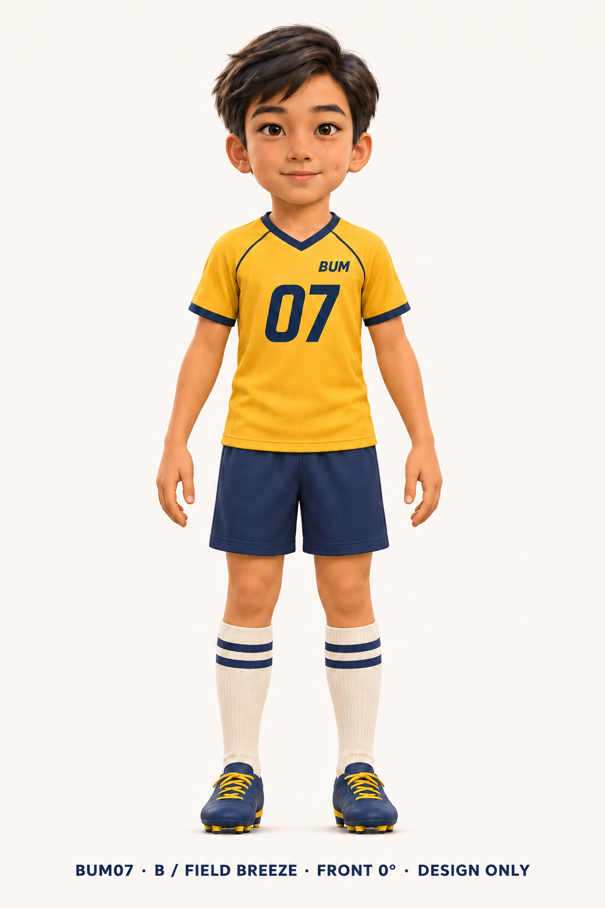
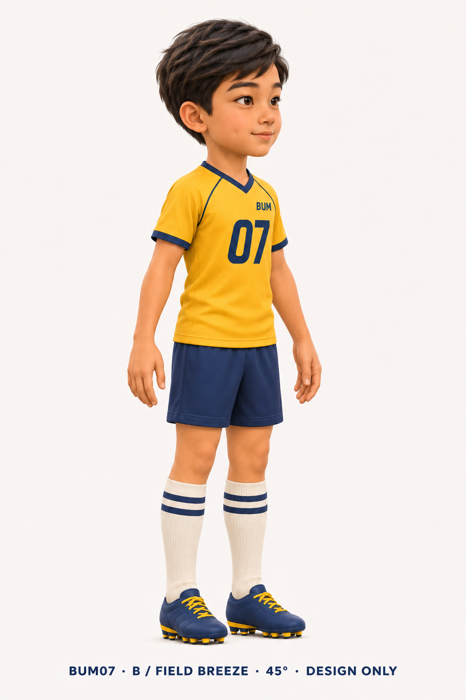
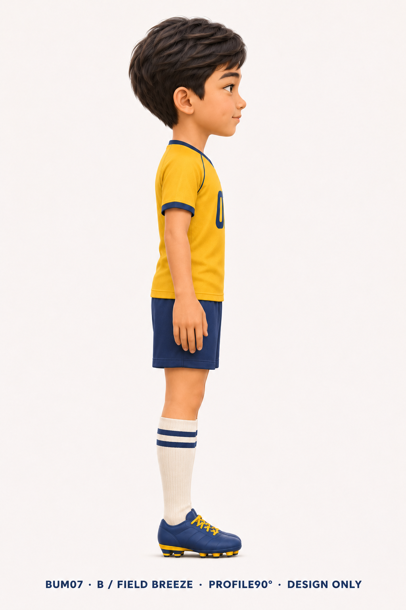
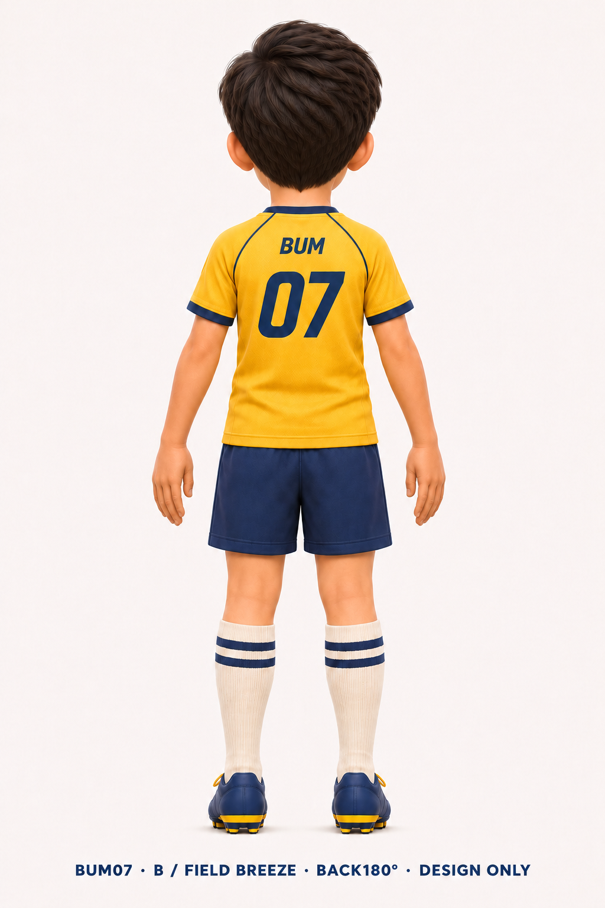
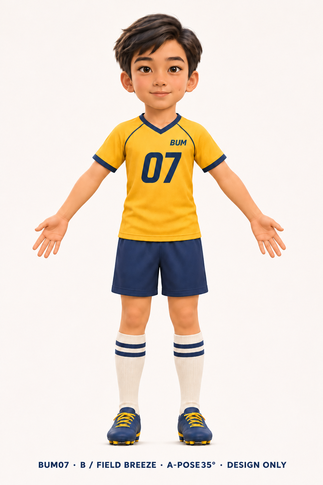
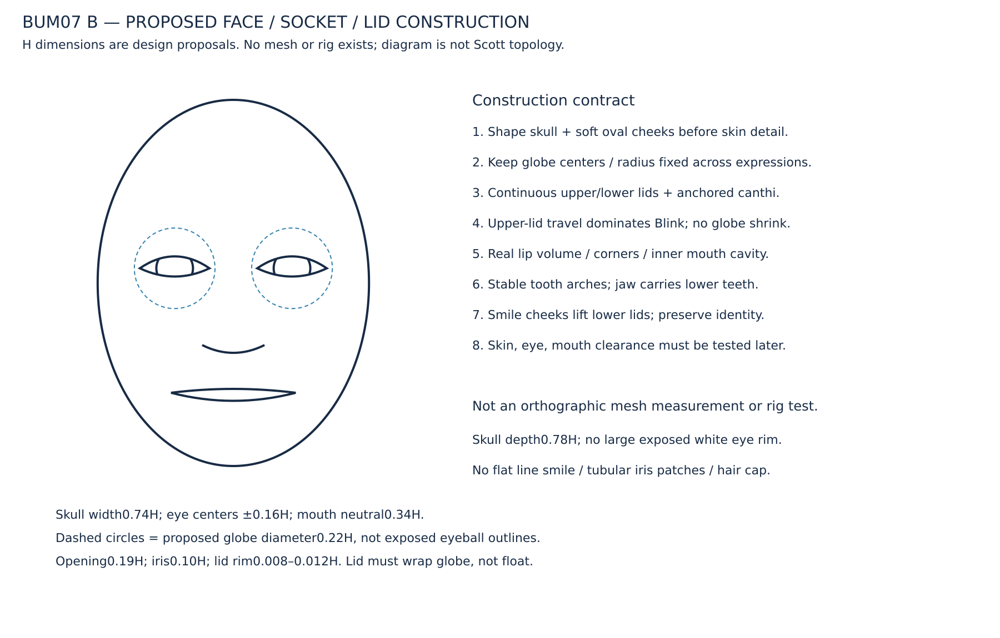
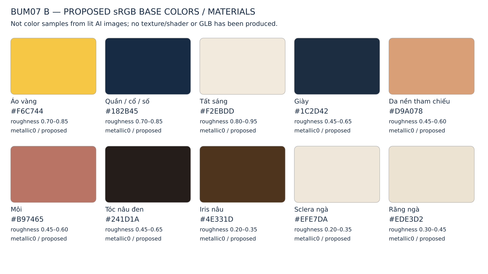

BUM07 · P5.2 Turnaround & Construction Specification
B / FIELD BREEZE ĐÃ ĐƯỢC CHỌN · SPEC P5.2 CHỜ NGHIỆM THU
Nguồn P5.1: commit35997cc. Chỉ dùng nhận diện B: mặt oval mềm, mắt hạnh nhân, tóc ngắn rẽ lệch thấp, áo vàng07, navy, tất sáng và giày bóng đá.
Chỉ tài liệu thiết kế. Chưa được phép triển khai Blender. Ảnh AI concept, không phải render Blender hoặc bằng chứng có model 3D. Không tự công bố9/10.
Bộ bàn giao
6 PNG turnaround riêng:0°,45°,90°,180°, A-pose và cận mặt neutral.
16 PNG biểu cảm riêng trong PDF biểu cảm:8 trạng thái×2 góc.
Bảng tỷ lệH/CSV/JSON, màu và cấu trúc tóc–mắt–miệng–trang phục.
Báo cáo nhất quán, điểm còn phải chốt và tiêu chí PASS/FAIL.
H là chiều cao sọ–cằm neutral, không tính tóc. 5 H từ sọ đến đất và tối đa5,2 H tính tóc là đề xuất, chưa đo từ mesh. PNG gốc1024×1536; không nội suy phóng lớn.
Không sửa main, Pages, Supabase, PR#2, ba nhân vật khác hoặc các bản lịch sử. Không dựng mesh/rig/GLB sản xuất trong P5.2.
Bố cục mốc đo chung — không phải camera đã kiểm chứng
Các PNG giữ nguyên1024×1536, đặt1:1 rồi phủ thước H đề xuất; không kéo giãn từng ảnh để che chênh lệch.
Đất tài liệu y1408, đỉnh sọ đề xuất y96,1 H = 262,4px. Sọ bị tóc che nên không được coi thước này là phép đo giải phẫu từ ảnh. Các góc là ý đồ orthographic-style, chưa có mesh/camera thật. Xem từng ảnh lớn ở các trang sau.
Turnaround · Chính diện0° / Góc45°
Cùng dáng đứng; góc 45 nhìn từ bên phải giải phẫu, mũi hướng phải trang.

0° · mốc nhận diện P5.2

45° · diễn giải cùng khối
Ảnh AI design-only; số đo bảng là đề xuất, không phải đo từ model.
Turnaround · Nghiêng90° / Sau lưng180°
Sau lưng/gáy/back07 là đề xuất mới cần chủ dự án duyệt riêng.

90° · nghiêng bên phải

180° · sau lưng
Ngôi ở trái nhân vật; không mirror ảnh để làm phía còn lại. CổV chỉ ở trước, sau là cổbo.
A-pose / Cận mặt neutral
A-pose35° là ý đồ tư thế thiết kế, không phải rig. Cận neutral dùng chung byte với biểu cảmNeutral0°.

A-pose · không đổi tỷ lệ theo khungNeutral0° · mốc biểu cảm
Giữ bàn tay năm ngón; mắt hạnh nhân và oval đầu của B, không đổi sang Scott/A/C.
Bảng tỷ lệ đề xuất — chưa có mesh để đo
Mốc
Đề xuấtH
Ý nghĩa
Sọ–cằm / sọ–đất
1,00 /5,00
Không tính phần tóc nhô
Rộng / sâu sọ
0,74 /0,78
Chưa tính tai và nhô mũi
Tâm vai / hông / gối / cổ chân
3,85 /2,55 /1,50 /0,28
Cao từ đất
Tay trên / cẳng tay / bàn tay
0,82 /0,65 /0,44
Dài theo chi
Đùi / cẳng chân
1,05 /1,22
Từ tâm khớp
Rộng khe mắt / đường kínhglobe / iris
0,19 /0,22 /0,10
Tâm mắt cách nhau0,32H
Miệng neutral
0,34
Không dùng smile thayrest
Cạp quần / gấu áo
2,48 /2,43
Đề xuất áo che cạp
Số07 trước: cao / rộng
0,38 /0,50
TâmZ~3,33H
Dài / rộng giày
0,82 /0,34
Không đo dài giày ởgóc 0°
Bảng đầy đủ: specification/body-landmarks.csv,proportions.csv,design-spec.json. Không khóa chiều cao thật bằngmét, LOD, texture resolution hoặc ngân sáchGPU ở giai đoạn này.
Cấu trúc mặt — sơ đồ2D đề xuất

Giữ globe vàsocket ổn định, vành mí cóchiều dày, khóe cómô nối; môi/khóe/má cóthể tích. Răng trên theo hàm trên, răng dưới/lưỡi theo hàm dưới. Chưa có wireframe/rig hoặc contact test.
Bảng màu và vật liệu tham chiếu

Đây là baseColor sRGB và roughness đề xuất, không lấy mẫu từ ảnh AI đã chiếu sáng. Metallic đề xuất0; chưa tạo shader/texture hay đo iPhone.
Nhất quán, sai khác và cổng nghiệm thu
Đã có trong hồ sơ
Còn phải chốt / chưa kiểm chứng
6góc,22 PNG gốc; cùng B;8 cặp biểu cảm; thước H, hướng dẫn và bảngmàu.
Camera thật/cùng mesh: NOT_VERIFIED. Tỷ lệH làđề xuất, không số đo mesh.
Hairline/độ phồng gáy, chiều sâu tai–má–mũi, nếp vải và vị trítext còn trôi nhẹ giữa ảnh.
Happy/BigSmile/Celebration khác mức mởmiệng/mí/mày; Blink cóảnh đíchđóng.
Cung răng chưa thể chứng minh cùngcấu trúc; Focused hơi nghiêm, Celebration nheo rõ. Cầnchủ dự án duyệt.
Hướng dẫn tóc/socket/mí/môi/răng/má/trangphục và điểm tránh khi rig ởbước sau.
Không cómesh/topology/UV/rig/skin/collision/GLB/FPS P5.2. Không mượnPASS P4.1R.
PASS hồ sơ ≠ PASS hình học 3D ≠ phê duyệt nghệ thuật. Tiêu chí bị mâu thuẫn cầnFAIL hoặc giữNOT_VERIFIED/OWNER_PENDING; không tự chuyển thành PASS. Chỉ ownerđược duyệt P5.2 và cho phép Blender.
Đọc MODEL-CONSTRUCTION-GUIDE.md, CONSISTENCY-REPORT.md và ACCEPTANCE-CHECKLIST.md để xem chi tiết. Không trộnA/C hoặc ép mặtScott vàoB.
Dừng tạiP5.2. Chưa sculpt,mesh,rig hoặcGLB sản xuất; không merge PR2 haytích hợp game.
Neutral, Happy, BigSmile, Blink100, Focused, Surprised, Disappointed và Celebration. Mỗi trạng thái cóPNG0°/45° riêng, cùng mốc neutral và khungđầu.
ẢnhAI design-only, không phải render Blender, mesh deformation hoặc bằng chứng Blink hếtxuyên globe. Không có rig/blendshape P5.2.
Quan hệ thiết kế
Cần giữ
Mắt/mí/mày
Không đổi bánkính/tâmglobe đểngạc nhiên; má nâng kéo mí dưới khi cười; Blink giữmày/miệng neutral.
Miệng/má/hàm/răng
Hàm dưới xoay, không kéo sọ; môi cóthể tích, răng cócung vàbộ răng ổnđịnh; không khe răng củaC.
Nhận diện
Oval mềm, mắt hạnh nhân, tóc ngôi trái thấp. Không thêmtóc A/C hoặc đổi sang Scott.
Độ rộngrăng/nếp má/viềnmí trongAI còntrôi nhẹ giữa ảnh. Cầnduyệt cường độFocused và Celebration; xem báo cáo sai khác. Ảnh chỉ làđíchđểchọn thiết kế, không tự cho phép Blender.